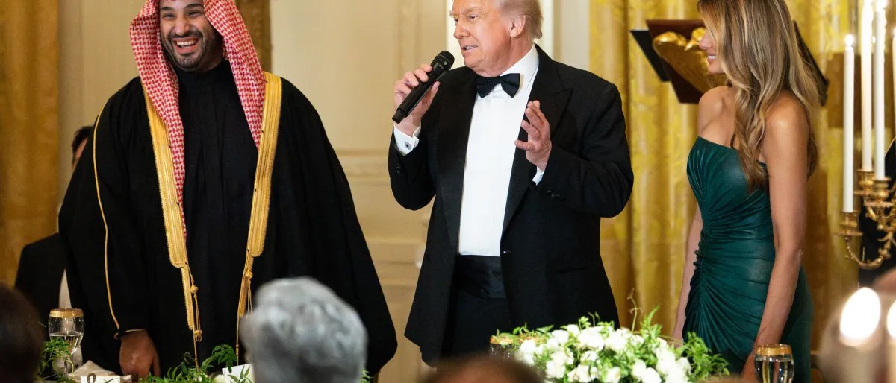

The Widening Rift: Inside the Deepest US-Saudi Crisis in Years
How the Iran war, a failed military operation, and a very public insult exposed the limits of America's oldest Gulf partnership.

For eight decades, the US-Saudi relationship has rested on a simple exchange: American security guarantees in return for stable oil flows and regional access. According to a Wall Street Journal investigation published this week, that foundation is now cracking — and the fault lines run through a botched military operation, a threatened arms cutoff, and a sitting US president publicly mocking the Saudi Crown Prince on a stage Saudi Arabia's own sovereign wealth fund built.
This is the timeline, the sourcing, and what it means for the region.
The breaking point: Operation Project Freedom
In early May 2026, President Trump announced "Project Freedom" on social media — a plan to send US warships and aircraft to escort commercial vessels through the Strait of Hormuz, after Iranian strikes disrupted shipping in the wake of the broader US-Iran war. More than 100 aircraft were mobilized from bases and carriers across the region within hours.
There was one problem: Gulf allies, including Saudi Arabia, hadn't been consulted before the announcement. According to the WSJ, Saudi officials — alarmed that the operation would provoke further Iranian retaliation — told Trump directly that the plan should be reconsidered. When Washington proceeded anyway, Riyadh denied the US military access to Prince Sultan Air Base and Saudi airspace, both essential to sustaining the mission. Kuwait made an identical call on Ali Al Salem Air Base.
Within 48 hours, Project Freedom was suspended. Trump publicly attributed the pause to progress in Iran negotiations; the Journal's reporting, corroborated by multiple US and Arab officials, tells a different story — the operation collapsed because a key ally pulled the rug out from under it.
Washington's pressure play: the interceptor threat
What happened next is the sharpest edge of the WSJ story. Furious at Riyadh's refusal, the White House reportedly threatened to withhold delivery of missile defense interceptors — systems Saudi Arabia was actively using to shoot down Iranian missiles and drones — unless the kingdom reversed course. Facing the prospect of losing active air defense during a live missile threat, Saudi Arabia relented within days, restoring access to its bases and airspace.
Project Freedom itself was never publicly relaunched. Instead, US forces reportedly shifted to quietly escorting commercial vessels at night, with ships operating dark to reduce their exposure to Iranian attack — a far more limited posture than originally announced.
The episode marks, in the Journal's characterization, one of the most serious ruptures in US-Saudi military relations in years — not because of a policy disagreement, but because Washington used the threat of withholding active air-defense support as leverage against a treaty-adjacent partner mid-conflict.
The personal rift: two public humiliations
The institutional damage was compounded by something more unusual: personal, public mockery of MBS by a sitting US president — twice in about three months.

- March 27, Miami: speaking at the FII Priority summit, an investment forum organized and funded by Saudi Arabia's own Public Investment Fund, Trump told 1,500 global delegates that MBS "didn't think he would be kissing my ass" and recounted the Crown Prince once dismissing America as a declining power. No White House walk-back followed; the remarks were carried live.
- June 17, G7 Summit, France: weeks after the Project Freedom standoff, Trump told reporters that Gulf states couldn't really stop US military operations "if we didn't want them to" — a direct rhetorical reversal of what had just happened in May, when Saudi Arabia proved it could, and did, block a US operation through basing denial.
Saudi Arabia's official response to both moments has been silence — state-aligned outlets covered the events without referencing the remarks, a pattern regional analysts read as Riyadh managing friction with a security patron it still can't afford to publicly antagonize.
Snubs on both sides
The rift has since played out through diplomatic signaling rather than statements:
- MBS skipped the G7 summit in France that Trump attended, in what sources told the WSJ was a direct protest of how Washington handled the war.
- Secretary of State Marco Rubio's Gulf tour last month stopped in the UAE, Kuwait and Bahrain — deliberately bypassing Saudi Arabia. The State Department framed the trip as showcasing partnerships with countries most affected by Iranian strikes; Riyadh reportedly read it as a calculated snub.
The White House, through spokeswoman Anna Kelly, maintains the relationship remains strong, saying Trump "takes seriously the input" of regional partners while making decisions based on US interests.
The UAE factor: a Gulf split, not just a US-Saudi one
The rift isn't purely bilateral. Saudi Arabia had also pushed Washington to restrain the UAE, which took a harder anti-Iran line during the war and pulled out of OPEC in April — a move that widened an existing Riyadh-Abu Dhabi divide over how confrontational the Gulf states should be toward Tehran.
Riyadh wanted US pressure on the UAE to de-escalate and join diplomatic efforts; that request reportedly went nowhere, adding to Saudi frustration that its influence over Washington's regional posture has weakened even as its exposure to Iranian retaliation has grown.
What comes next: troop presence, not arms sales
Two claims often get conflated in coverage of this story — it's worth being precise about which is confirmed.
Troop presence
The US is genuinely considering reducing its military footprint in Saudi Arabia and reallocating forces toward Israel and Jordan — countries Washington judged more supportive during the war. This is reported as under consideration, not yet executed.
Arms sales
These have not been cancelled. If anything, Washington pushed through an emergency $8.1 billion arms package to Saudi Arabia, the UAE and Jordan in May, overriding Congressional objections tied to Yemen casualty concerns. The interceptor threat was a temporary pressure tactic during the Project Freedom standoff, not a broader arms freeze.
Washington is reconsidering where its troops sit, while simultaneously fighting to keep weapons flowing to the same partner it's threatening to reposition away from — a contradiction that itself says something about how transactional the relationship has become.
Analysis: what this means for the region
- The oil-for-security bargain is being renegotiated in real time. Saudi Arabia's core objection was never abstract — it warned specifically that toppling Iran's regime risked closing Hormuz and damaging both regional stability and the US economy. That warning proved accurate once the war began, yet Riyadh still absorbed the political cost of resisting Washington.
- Riyadh is hedging, not exiting. Saudi Arabia remains dependent on US-made air defense systems; switching to alternatives would take years. Expect continued friction without a full rupture — Riyadh will keep pushing back on individual operations while preserving the underlying alliance.
- A reduced US troop footprint creates an opening. Any drawdown in Saudi Arabia leaves room for China or Russia to expand security and economic offers in the Gulf — a far bigger long-term story than the personal friction between the two leaders.
- Israel normalization loses momentum. MBS has consistently tied any Abraham Accords progress to real movement on Palestinian statehood. A Saudi leadership that feels publicly humiliated and strategically sidelined has even less incentive to hand Trump a normalization win.
- Gulf unity is fraying, not just US-Gulf relations. The Saudi-UAE divide over Iran policy may prove as consequential for regional security architecture as the US-Saudi friction itself.
Sourcing note: this report is based on reporting from The Wall Street Journal, with independent corroboration from The Times of Israel, The Jerusalem Post, Bloomberg, and regional intelligence sources. Direct quotations are limited to on-record statements; all other claims are attributed to named officials or sourced reporting as indicated.
Read every story. Support independent research.
- Unlimited access to every article and research deep dive
- Member-only briefings across India, World and AI & Tech
- Downloadable data behind every chart
- No ads. Cancel anytime.
Billed monthly in INR.